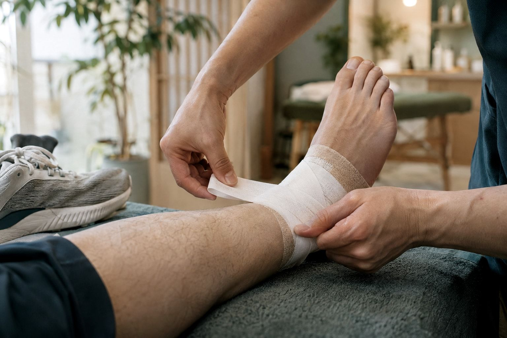
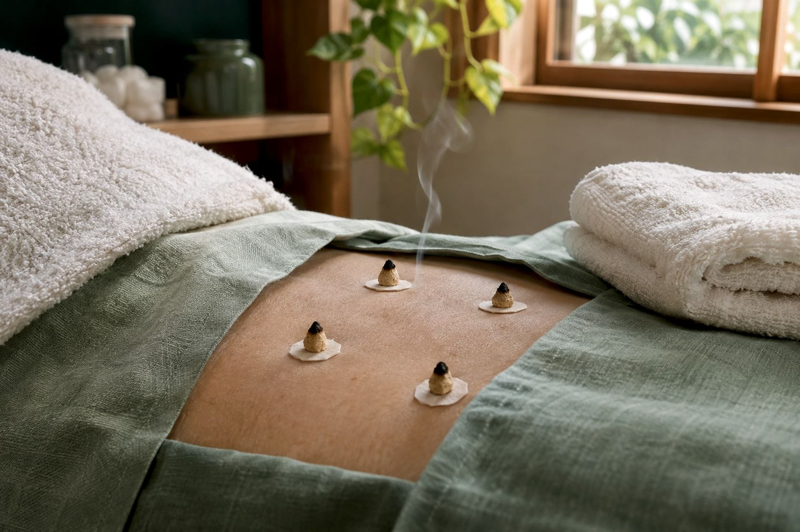
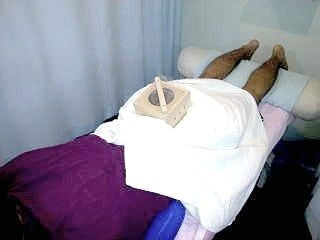
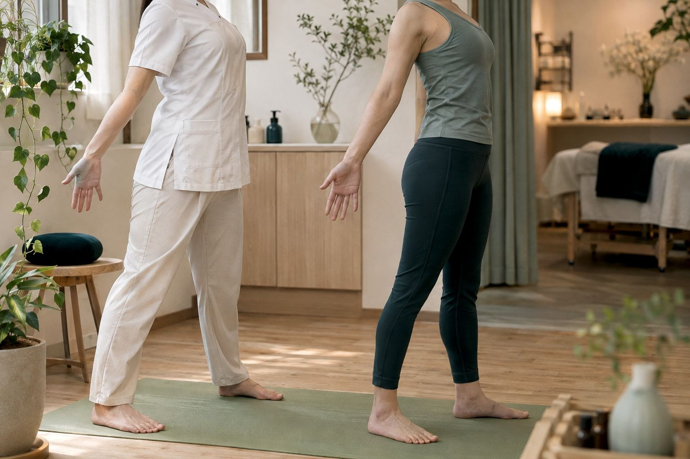
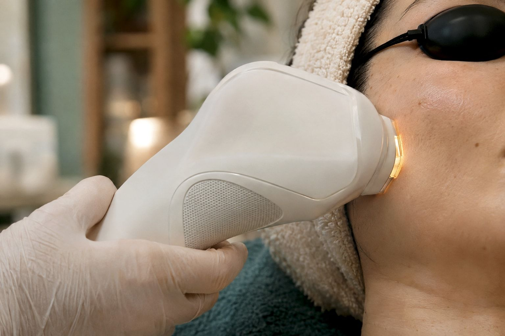
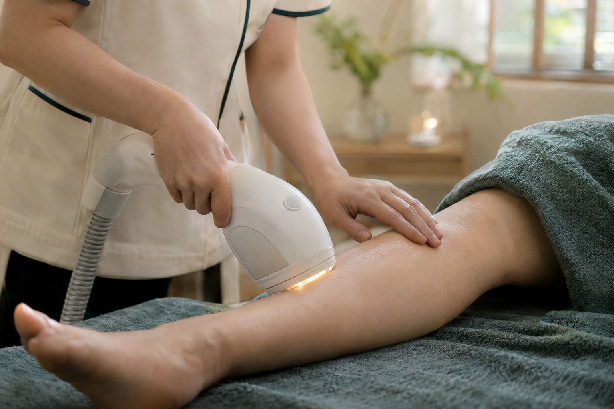
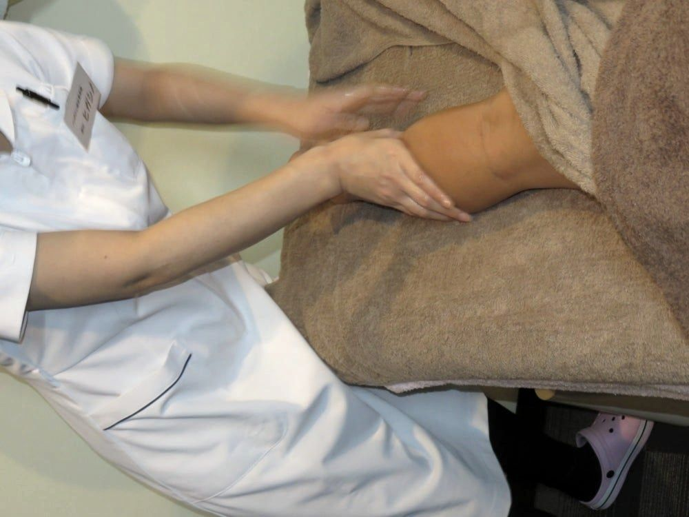
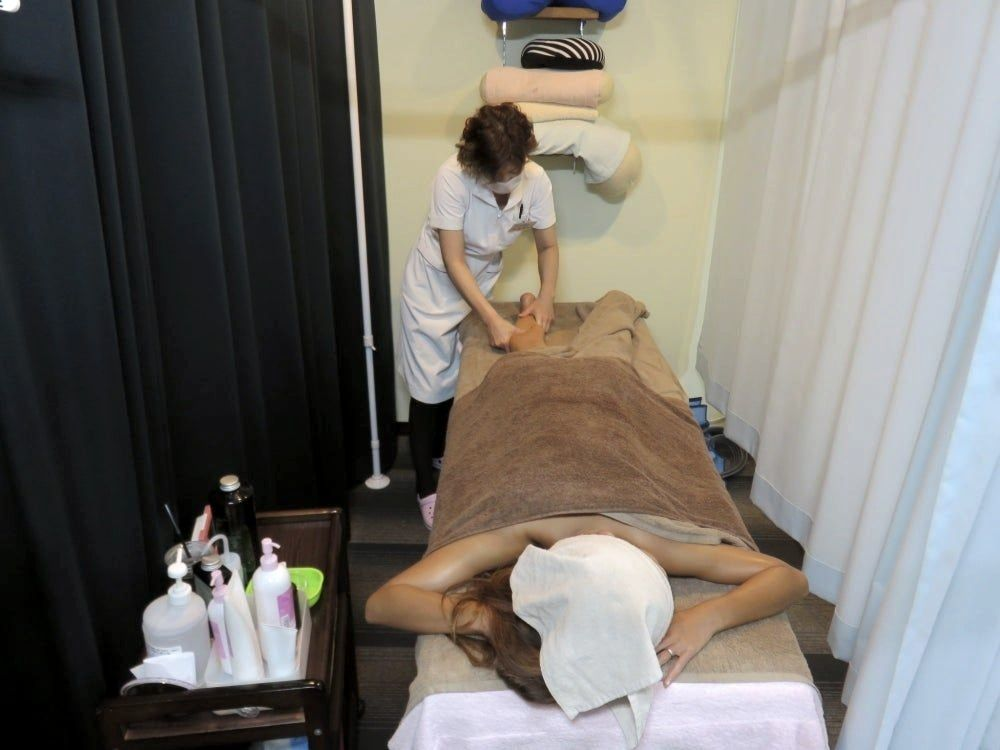
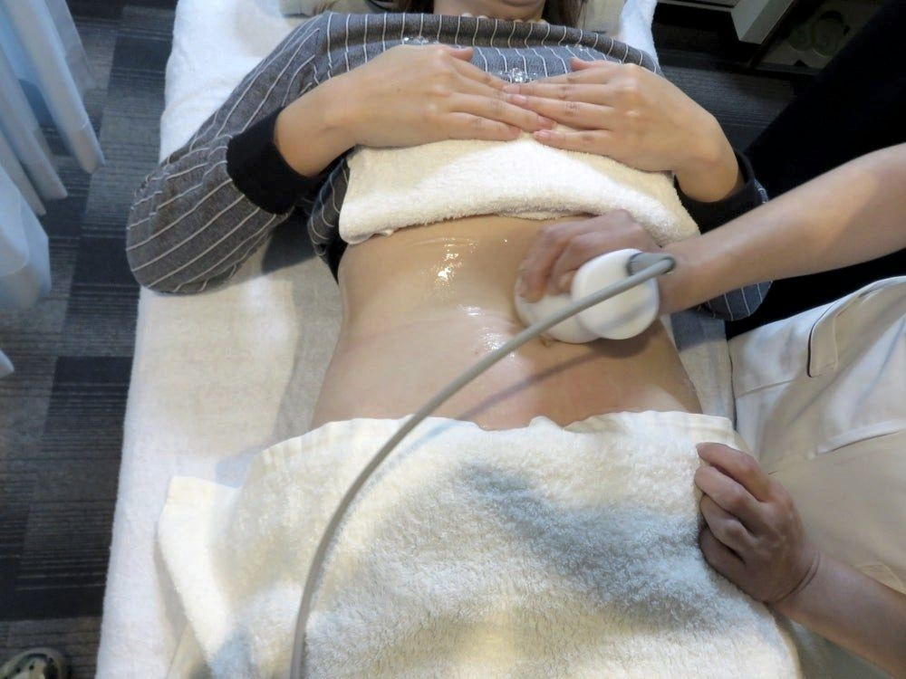

施術メニュー・料金
院長が担当する「鍼灸整骨」と、女性エステティシャンが担当する「エステ」。それぞれのメニューを、写真と説明つきでご案内します。
メニューは「鍼灸整骨」と「エステ『〇〇〇〇』」の二つに分かれています。各メニューを押すと、どんな方が受けているか、当日の流れ、受ける前の注意点をくわしく読めます。
健康保険が使えるのは、ねんざ・打撲・肉離れなど、きっかけがはっきりしたケガの施術です。鍼灸、美容鍼、運動指導、エステは自費のメニューです。
鍼灸整骨
ケガ、こり、交通事故、スポーツ。院長が担当します。

ケガの施術
ケガの施術（保険施術）
ねんざ・打撲・肉離れなど、きっかけがはっきりしたケガの施術。健康保険が使えることがあります。
こんな方に部活動やクラブチームで足首をひねった学生の方
- 料金
- 窓口でのご負担は、保険の負担割合によって変わります（目安：1,650円〜・税込）

手技
手技
手で筋肉の緊張をゆるめる施術。肩や腰の慢性的なこり、疲れのご相談に。
こんな方にデスクワークで一日中座っている方
- 料金
- 4,400円（税込）・要予約

鍼
置鍼（おきばり）
ツボに細い鍼をして、10分ほどそのまま休む鍼。初めての方はここから。
こんな方に鍼が初めてで、弱い刺激から試したい方
- 料金
- （準備中）

鍼
電気鍼
置いた鍼に弱い電気を流す鍼。しっかりした刺激をお求めの方に。
こんな方に置鍼を受けたことがあり、もう少し刺激がほしい方
- 料金
- （準備中）

灸
だるま灸
台座にのせた灸でツボを温める、やさしい熱の灸。鍼が苦手な方にも。
こんな方に鍼は怖いが、鍼灸を試してみたい方
- 料金
- （準備中）

灸
箱灸（へそ灸）
木の箱に入れた大きめの灸で、お腹・腰・背中を広く温めます。
こんな方にお腹や腰まわりの冷えが気になる方
- 料金
- （準備中）

鍼
美容鍼（美顔鍼）
顔と頭にごく細い鍼をする施術。表情のくせや食いしばりで、顔がこわばっている方に。
こんな方にパソコンやスマートフォンで目をよく使う方
- 料金
- 4,400円（税込）・6回分の回数券あり

交通事故
交通事故後のケア
むちうち、腰の痛み、しびれなど。医療機関を受診したあとのケアを担当します。
こんな方に追突されて、首や肩が重くなってきた方
- 料金
- 自賠責保険の適用で、窓口負担がないことがあります

スポーツ
スポーツコンディショニング
部活動やクラブチームの学生、競技を続ける大人の方の、練習・試合に向けた身体の調整。
こんな方に部活動やクラブチームで練習量が増えている学生の方
- 料金
- （準備中）

スポーツ
運動指導・パーソナルトレーニング
4スタンス理論・5ポイント理論にもとづく、ストレッチと身体の使い方の個別指導。
こんな方にフォームを直しても、しっくりこない競技者の方
- 料金
- ストレッチ指導は無料。パーソナルトレーニングは（準備中）


エステ「〇〇〇〇」
フェイシャルとボディ。女性エステティシャンが担当します。 ご予約はお電話（000-0000-0000）で承ります。

フェイシャル
光フォトフェイシャル
光を当てる機器を使ったフェイシャルケア。お顔のお手入れを続けたい方に。
こんな方に自宅でのお手入れに加えて、サロンでのケアを受けたい方
- 料金
- （準備中）
フェイシャル
リフトアップフェイシャル
エステティシャンの手による、お顔まわりのフェイシャルケア。
こんな方に機器よりも、手でのケアを好む方
- 料金
- 4,950円（税込）
フェイシャル
炭酸ヘッドスパ
炭酸を使って頭皮を洗い、手でほぐすヘッドスパ。頭の重さが気になる方に。
こんな方にパソコンやスマートフォンで目をよく使う方
- 料金
- （準備中）

ボディ
脱毛（除毛・減毛）
照射面を冷やしながら光を当てる機器による、除毛・減毛。自己処理の負担を減らしたい方に。
こんな方にカミソリでの自己処理で肌が荒れやすい方
- 料金
- 全身 11,000円／Lパーツ 4,500円／Mパーツ 3,000円／Sパーツ 1,000円／お顔全体 3,000円（税込）

ボディ
疲労回復ボディケア
エステティシャンによる、全身のリラクゼーションケア。一日の終わりに休みたい方に。
こんな方に仕事や家事の合間に、ひと息つきたい方
- 料金
- （準備中）

ボディ
アロマオイルボディケア
アロマオイルを使い、手で全身をケアするメニュー。香りでリラックスしたい方に。
こんな方に香りが好きな方
- 料金
- 5,280円（税込）

ボディ
キャビテーションによる痩身ケア
超音波の機器を使ったボディケア。お腹・太ももなど、気になる部分のお手入れに。
こんな方にお腹や太ももまわりのお手入れをしたい方
- 料金
- 4,400円（税込）・6回分の回数券あり・要予約
ボディ
骨盤・姿勢のケア（産後のご相談）
骨盤まわりと姿勢のケア。産後の身体が気になる方、姿勢のくせが気になる方に。
こんな方に出産後、身体の変化が気になる方
- 料金
- 4,400円（税込）
健康保険が使える場合と、使えない場合
整骨院で健康保険が使えるのは、いつ・どこで・何をして痛めたかがはっきりしたケガ（外傷）です。どちらに当たるかは、来院時に経過をうかがってご説明します。
保険の対象になるもの
- 骨折・脱臼（応急手当を除き、医師の同意が必要です）
- 打撲
- 捻挫
- 挫傷（肉離れなど）
保険の対象にならないもの
- 慢性的な肩こり・腰痛
- 疲労回復やリラクゼーションを目的とした施術
- 原因がはっきりしない長引く痛み
- 病気（神経痛・リウマチ・五十肩・ヘルニアなど）による痛み
- 医療機関で同じケガの治療を受けている場合
保険証（マイナ保険証・資格確認書）をお持ちください。仕事中・通勤中のケガは労災保険、交通事故によるケガは自賠責保険の対象になります。お支払い方法：現金のほか、クレジットカード、QRコード決済、電子マネーが使えます（（準備中））